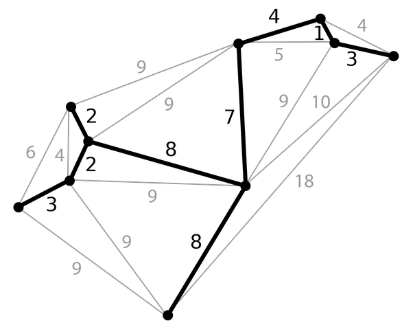

How are mazes generated?
Maze are generated using Prim's Minimum Spanning Tree Algorithm. Prim’s Algorithm is a minimum spanning tree algorithm. An MST of a graph is the subset of edges (with the smallest total weight) where you can reach every node in the graph. For example, in the following diagram, the MST is highlighted in bold.
A maze can be thought of as a graph, although not weighted since the distance from each cell to its adjacent cells is always 1. In graph theory terms, you can think of the cells as nodes and the connections from each cell to its neighboring cells as edges. Prim’s Algorithm creates a maze that ensures there’s always a path between the starting and ending point because that is the very definition of an MST. When applied to maze generation, Prim’s Algorithm is still very similar to the original graph version, but instead of continuously adding the closest node to the tree, it just adds a random one, since a maze graph is unweighted. Below is the pseudo-code for the standard graph version and the maze version.
Graph Version:
Choose a random node from the input graph
Initialize the MST (starts with the random node)
While not all of the vertices are in the MST:
Get the last node entered into the set
Retrieve the edges to that node and determine the shortest edge
Add that edge and the node connected to by that edge to the MST
Maze Version:
Select a random cell from that maze
Create a list of walls
Add the walls from the initial cell to the list of walls
While the list of walls isn't empty:
Select a random wall from the list:
Calculate the two cells the wall divides
If one of the cells isn't visited:
Delete the wall
Mark the unvisited cell as visited
Add the walls of the cell to the list of walls
Remove the random wall from the list